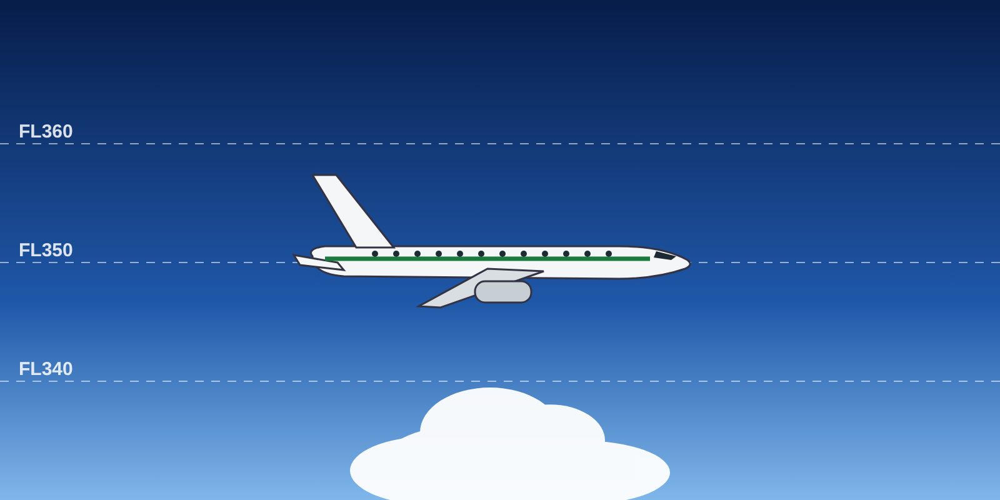

Module 1 · RVSM Operations
Lesson 03: Entering and Flying in RVSM Airspace
Lesson narration
Checking for narration…
Learning objectives
- List the equipment that must be operating before entering RVSM airspace.
- Apply the en-route height-keeping procedures.
- Perform and record the altimeter cross-checks.

Before entering RVSM airspace
The following equipment must be operating normally:
- two primary altitude measurement systems;
- one automatic altitude control system;
- one altitude alerting device;
- the transponder.
If any of this equipment fails before entry, request a new clearance to avoid RVSM airspace, or follow the established contingency procedures.
En-route procedures
- Fly at the cleared flight level (CFL). Make sure every ATC clearance is fully understood, read back and cross-checked by both pilots.
- Except in an emergency, do not intentionally leave the CFL without an ATC clearance.
- Use the automatic altitude capture for level changes. Overshoots and undershoots should not exceed 150 ft.
- Reduce the vertical rate to less than 1,500 ft/min in the last 1,000 ft before the cleared level, especially when traffic is at the adjacent level (see Lesson 5).
- In cruise, fly with the automatic altitude control engaged, except when the aircraft must be re-trimmed or in turbulence where the procedure requires otherwise.
Altimeter cross-checks
- At intervals of about one hour, cross-check the primary and standby altimeters.
- The two primary altimeters must agree within 200 ft.
- Record at least the initial cross-check — on the operational flight plan (Jetplan).
- Normally, the altimetry system controlling the autopilot should also be the source for the transponder's altitude reporting. If not, report the system as defective and notify ATC.
Key takeaways
- Before entry: two altimetry systems, autopilot altitude hold, altitude alerter, transponder.
- Fly the CFL with altitude hold engaged; overshoot or undershoot less than 150 ft.
- Less than 1,500 ft/min in the last 1,000 ft before the cleared level.
- About every hour: primary altimeters within 200 ft; record the initial check.
Knowledge check
What is the maximum difference allowed between the two primary altimeters in RVSM airspace?